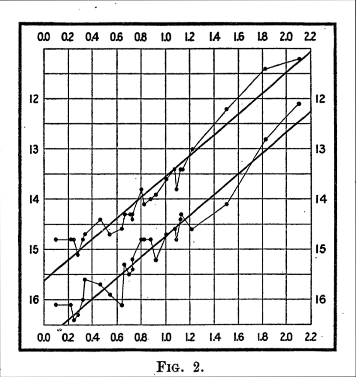

Stockholm University · Department of Astronomy
AS5003 (Cosmology) HT26
Lecture 7 (24 Nov 2026)

Image credit: NASA
580 type Ia supernovae (Union2.1, Suzuki et al. 2012) and the Benchmark Model
Practical information
- Home assignments:
- Problem set 3 was due today, 10:00.
- Problem set 4 is due Thursday 3 December, in Canvas.
- Next lecture: a recap of chapters 2–6, and exercises. Tell me which topics or exercises you want to go through in the anonymous Canvas survey Recap topics by Wednesday 25 November, 13:00.
- Literature review: the written report is due Tuesday 15 December; the presentations are on Thursday 17 and Friday 18 December.
Recap
From last time
- One component: analytic solutions for $a(t)$.
- Several components: integrate the Friedmann equation numerically (matter + curvature, matter + $\Lambda$, radiation + matter, …), or use a cosmology calculator.
- With $\Lambda$, the fate depends on both $\Omega_{m,0}$ and $\Omega_{\Lambda,0}$.
- The Benchmark Model: flat, with $\Omega_{r,0} = 9.0\times10^{-5}$, $\Omega_{m,0} = 0.31$, $\Omega_{\Lambda,0} = 0.69$, $H_0 = 68$ km/s/Mpc.
Recap
Distances from the general solution
The comoving distance (proper distance today) to a galaxy at redshift $z$:
$$d_p(t_0) = \frac{c}{H_0}\int_{a_e}^1 \frac{da}{\left[\Omega_{r,0} + \Omega_{m,0}\,a + \Omega_{\Lambda,0}\,a^4 + (1 - \Omega_0)\,a^2\right]^{1/2}}$$or, in terms of redshift (show this!):
$$d_p(t_0) = c\int_0^z \frac{dz'}{H(z')} = \frac{c}{H_0}\int_0^z \frac{dz'}{E(z')}$$with $\;E(z) = \left[\Omega_{r,0}(1+z)^4 + \Omega_{m,0}(1+z)^3 + \Omega_{\Lambda,0} + (1 - \Omega_0)(1+z)^2\right]^{1/2}$
Goals of this week
- How we measure distances, and from them the cosmological parameters ← today
- Put together what we have learnt about cosmic dynamics ← next lecture
Today's plan
- "A search for two numbers": $H_0$ and $q_0$
- The luminosity distance and standard candles
- Type Ia supernovae and the accelerating universe
- The angular-diameter distance and standard yardsticks
A search for two numbers
Taylor-expanding the scale factor
We cannot observe $a(t)$ directly. Near today, expand it:
$$a(t) = a(t_0) + \left.\dot a\right|_{t_0}(t - t_0) + \frac{1}{2}\left.\ddot a\right|_{t_0}(t - t_0)^2 + \dots$$Divide by $a(t_0)$:
$$\frac{a(t)}{a(t_0)} \approx 1 + \left.\frac{\dot a}{a}\right|_{t_0}(t - t_0) + \frac{1}{2}\left.\frac{\ddot a}{a}\right|_{t_0}(t - t_0)^2$$with the deceleration parameter $\;q_0 \equiv -\left.\dfrac{\ddot a\,a}{\dot a^2}\right|_{t_0}$
- $q_0 > 0$: the expansion slows down. $q_0 < 0$: it speeds up.
- No physics yet: just a description of the expansion near $t_0$.
A search for two numbers
$q_0$ from the acceleration equation
In terms of the $\Omega_i$, like the Friedmann equation:
$$\frac{\ddot a}{a} = -\frac{H^2}{2}\sum_i \Omega_i\,(1 + 3w_i)$$Take $-H^2$ to the left:
$$-\frac{\ddot a}{aH^2} = \frac{1}{2}\sum_i \Omega_i\,(1 + 3w_i)$$No curvature term. Radiation and matter decelerate, $\Lambda$ accelerates.
Today, the left side is $q_0$:
$$q_0 = \frac{1}{2}\sum_i \Omega_{i,0}\,(1 + 3w_i) = \Omega_{r,0} + \tfrac{1}{2}\,\Omega_{m,0} - \Omega_{\Lambda,0}$$Benchmark Model: $q_0 \approx -0.53$, so the expansion is speeding up today.
Exact $a(t)$: the flat universe with $\Omega_{m,0}$ = , $\Omega_{\Lambda,0}$ = , today.
A search for two numbers
Beyond the two numbers
$H_0$ and $q_0$ describe $a(t)$ only near today: further away, the Taylor expansion misses the exact curve.
To use measurements at any redshift, use the full distance:
$$d_p(t_0) = \frac{c}{H_0}\int_0^z \frac{dz'}{\left[\Omega_{r,0}(1+z')^4 + \Omega_{m,0}(1+z')^3 + \Omega_{\Lambda,0} + (1 - \Omega_0)(1+z')^2\right]^{1/2}}$$The parameters to measure: $H_0$, $\Omega_{r,0}$, $\Omega_{m,0}$, $\Omega_{\Lambda,0}$ (and from them the curvature, $1 - \Omega_0$).
Knowing the $\Omega_{i,0}$ also gives the deceleration parameter:
$$q_0 = \Omega_{r,0} + \tfrac{1}{2}\,\Omega_{m,0} - \Omega_{\Lambda,0}$$How do we actually measure distances?
$d_p(t_0)$ cannot be measured: the tape measure would have to be laid out instantly. Instead:
- A standard candle is an object of known luminosity. Measuring its flux gives the luminosity distance.
- A standard yardstick is an object of known size. Measuring its angle on the sky gives the angular-diameter distance.
- Each is related to $d_p(t_0)$. Compare with the prediction of each model universe to find the one that fits best.
Luminosity distance
- The luminosity $L$ is the energy a source emits per unit time, a property of the source. For the Sun, $L_\odot = 3.83\times10^{26}$ W.
- The flux $f$ is the energy we receive per unit time and unit area, what we observe. For the Sun, at the top of the Earth's atmosphere, $f = 1361$ W m⁻².
The luminosity distance $d_L$ is defined so that
$$f \equiv \frac{L}{4\pi d_L^2} \qquad\Leftrightarrow\qquad d_L \equiv \left(\frac{L}{4\pi f}\right)^{1/2}$$In a static, Euclidean universe this is the inverse-square law, and $d_L$ is the proper distance.
Luminosity distance in an expanding universe
Observed flux $= \dfrac{\text{energy}}{\text{time}\times\text{area}}$. In an expanding universe, $d_L \ne d_p(t_0)$, for three reasons:
1. Geometry: today ($a = 1$) the light is spread over a sphere of area $4\pi S_\kappa(r)^2$, not $4\pi r^2$.
2. Redshift: each photon arrives with less energy, $E_0 = E_e/(1+z)$.
3. Time dilation: photons emitted $\delta t_e$ apart arrive $\delta t_0 = (1+z)\,\delta t_e$ apart.
Luminosity distance in a flat universe
Flat: $S_\kappa(r) = r = d_p(t_0)$, so
$$d_L = d_p(t_0)\,(1+z)$$A naive inverse-square law overestimates the distance by a factor $(1+z)$.
At a given $z$, sources are fainter (larger $d_L$) with $\Lambda$ than with matter only.
Standard candles
Nearby: Cepheid variable stars
- Luminous pulsating stars, $L \approx 400$–$40\,000\;L_\odot$, periods 1.5–60 days.
- Leavitt's law: the period gives the luminosity (Lecture 2).
- Calibrate with Cepheids of known (parallax) distance; then a distance ladder: parallax → Cepheids → brighter candles.
- Edwin Hubble used Cepheids to measure the distances to nearby galaxies, discovering the expansion of the universe (and making the first measurement of the Hubble constant).

Leavitt (1912): Cepheids in the Small Magellanic Cloud
Standard candles
Farther: type Ia supernovae
- A white dwarf near the Chandrasekhar mass, $1.4\,M_\odot$ (by accretion from a companion, or a merger), ignites: runaway fusion blows it apart.
- At peak, $L \approx 4\times10^9\,L_\odot$: 100 000 times the brightest Cepheid. Seen out to $z \sim 1$ and beyond.
- Not quite standard: peak luminosities $(3$–$5)\times10^9\,L_\odot$. But broader light curves are brighter: "standardizable" candles.
Standard candles
Distance modulus
Astronomers measure fluxes and luminosities in magnitudes:
- Apparent magnitude: $\;m = -2.5\log_{10}(f/f_x)$ (larger $m$: fainter)
- Absolute magnitude: $\;M = -2.5\log_{10}(L/L_x)$
The reference values go together: a source of luminosity $L_x$ at $d_L = 10$ pc has flux $f_x$. So $M$ is the apparent magnitude the source would have at 10 pc.
The distance modulus:
$$m - M = 5\log_{10}\left(\frac{d_L}{1\ \text{Mpc}}\right) + 25$$Large Magellanic Cloud: $m - M = 18.5$ · Virgo cluster: $m - M = 30.9$
Type Ia supernovae and the accelerating universe
The supernova Hubble diagram
- At small $z$ all models agree: the level gives $H_0$ (combined with the Cepheid calibration).
- The supernovae at $z \gtrsim 0.3$ are fainter than in an empty universe ($q_0 = 0$), so farther away. The expansion is speeding up.
- At $z \approx 1$: 0.6 mag fainter than matter only, 0.6 mag brighter than $\Lambda$ only.
Nobel Prize in Physics 2011: Perlmutter (Supernova Cosmology Project), Schmidt and Riess (High-z Supernova Search Team).
Data: Union2.1, Suzuki et al. 2012, ApJ 746, 85, for $H_0 = 70$ km/s/Mpc.
Type Ia supernovae and the accelerating universe
Try it: which universes fit the supernovae?
Gold: $\Omega_{m,0}$ = , $\Omega_{\Lambda,0}$ = , $q_0$ =
Click the plane to pick a universe. ★: the Benchmark Model.
Angular-diameter distance
A standard yardstick of known proper length $\ell$ (perpendicular to the line of sight) is seen at an angle $\delta\theta$. Define
$$d_A \equiv \frac{\ell}{\delta\theta}$$In a static, Euclidean universe, this is the small-angle formula, and $d_A$ is the proper distance.
From the Robertson–Walker metric, at the time of emission: $\;\ell = a(t_e)\,S_\kappa(r)\,\delta\theta$, so
$$\boxed{d_A = a(t_e)\,S_\kappa(r) = \frac{S_\kappa(r)}{1+z} = \frac{d_L}{(1+z)^2}}$$Angular-diameter distance in a flat universe
Flat: $S_\kappa(r) = d_p(t_0)$, so
$$d_A = \frac{d_p(t_0)}{1+z} = a(t_e)\,d_p(t_0) = d_p(t_e)$$The angular-diameter distance is the proper distance when the light was emitted.
So $d_A$ has a maximum (Lecture 6): beyond it, more distant objects look bigger on the sky. Benchmark Model: $d_A \le 0.40\,c/H_0 = 1.8$ Gpc, so 1 kpc appears at least 0.1″ across.
Standard yardsticks in practice
- Must be large enough to resolve: $\gtrsim 0.1''$ even at the maximum of $d_A$.
- Galaxies and clusters: big enough, but without sharp edges, and they grow with time (mergers, infall).
- Today's best yardstick: the sound waves of the early universe, imprinted in the CMB (Lectures 10–11) and in the clustering of galaxies.
Summary: measuring cosmological parameters
- Near today, $a(t)$ is described by two numbers: $H_0$ and $q_0 = \Omega_{r,0} + \tfrac{1}{2}\Omega_{m,0} - \Omega_{\Lambda,0}$
- Standard candles: $\;d_L = \left(\dfrac{L}{4\pi f}\right)^{1/2} = S_\kappa(r)\,(1+z)$
Standard yardsticks: $\;d_A = \dfrac{\ell}{\delta\theta} = \dfrac{S_\kappa(r)}{1+z}$ - Type Ia supernovae are fainter than expected at $z \gtrsim 0.3$:
the expansion is speeding up, $q_0 < 0$
Exercise session
Exercises: available on Canvas under the Lecture 7 module.
Before next time
- Next lecture: recap of chapters 2–6. Fill in the anonymous Canvas survey Recap topics by Wednesday 25 November, 13:00.
- Problem set 4 is due Thursday 3 December, in Canvas
- Read Ryden chapter 6 (and look back at chapters 2–5)